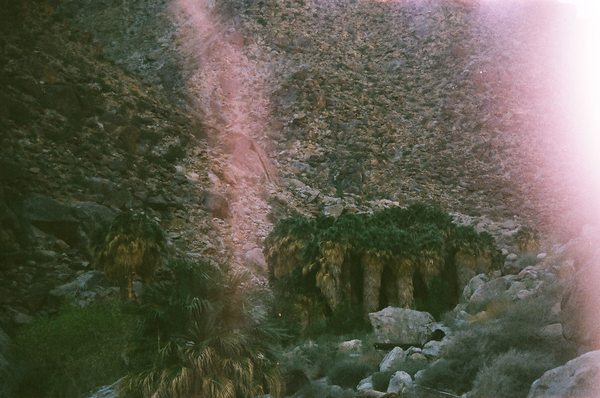

A couple hundred years prior, despite the unforgiving arms of the desert, people roamed through this valley in transit to desert oases splashed by palm trees and apocryphal water sources. People riding horses with deep brown manes, back and forth across the basin. Then, chiefly westward to the last bits of untouched land. As Charlie Chaplin once declared, life could be “free and beautiful”—perhaps it was that way here, under a blue sky turned white with heat, squeezed of moisture.
Across this basin, probably, a couple dozen travelers in squeaking carriages, bones riddled with potholes from the cold just east, backs turned red with the rage of heat, struggled to push across the uneven desert floor. Maybe a wheel had broken and someone had perished in the struggle against mortal exploration, found several years later as a lesson to this or that group of nomads or explorers. Be careful out here, someone would say. A group, robbed of a member, someone’s family, likely made it closer to the coast, whether by a few miles just to the edge of the basin or to see the coastal range some hundred miles further, and eked out a survival for years. Some wouldn’t make it beyond.
And when the massive US road network expanded like veins in a child growing in mother’s womb, this desert probably witnessed a better expression of the urban expansion that had flickered between its cacti and lizards in carriages for so many years. A movie had probably been shot in this basin with its desert range craning above the hollow-feeling floor—not as frightening as Manzanar, where the Sierra commanded shattering respect between iced fingertip precipices—and it was probably a man driving a convertible with a woman whose hair flowed behind her like the rapids of Oregon.
He stepped through mounds of sand and pockets of uneven earth. Extending ahead of him was hundreds of feet of scratchy sand floor that resembled blacktop. Tumbleweeds that scratched your skin and the skeletons of cacti that had bloomed and left their seeds nearby muddled the landscape.
The group of four combed through this patch of desert in a line, each about fifty feet from the other, scanning their surroundings for anything that moved or didn’t move and tried to blend in. Each wore a visible layer of sun block and dressed in those adventurer hats with the perfectly circular hat brim and a dangling string to fasten tighter in crumbling ruins. They all looked like archeologists that weren’t accustomed to outdoor work, perhaps the kind that scanned bones using carbon-dating techniques, or who preferred the solitude of secondary research to the solitude of primary.
“Hey there buddy!”
“See something?”
“Big guy here!”
The other three approached Maria. She stood over a haggle-faced tortoise, wrinkles slicing its neck into separate chunks of hanging flesh. The tortoise seemed to hover above the floor. An insidious looking plant knelt over beside it. Tiny dark green leaves, oval in shape, dark brown and brittle, sprouted from the boney branches. The kind of plant that we all assumed was gripping desperately to life, but was thriving in this desolation.
“Ah, well this guy’s shell is already marked. So, nothing new.”
“This is probably the…” She paused, “…fifth time in as many days we’ve come across a tortoise already marked. There must be only five in this whole basin.”
“Let’s have a break, then, and hang out with…”
Jeff flipped through his ledger of marked tortoises, comparing numbers to the squat reptile, who stared up at the four scavengers. Did the numbers on the page match its face? No, but they matched the number someone had painted on its shell.
“Number seventeen, it’s Jerry. Jerry the tortoise.”
The economics instructor, a graduate student, had decided to name a shelled animal, drifting through the desert with a marking on it, Jerry. There seemed to be varying levels of acceptance at this development.
Kieran wrinkled his nose and turned away from the other three to blow his nose. He preferred the quietude of library research and data modeling to fieldwork—he thought “fieldwork” was the domain of the FBI, archeologists, and farmers.
He crouched down to befriend Jerry, but the skittish tortoise pulled its head almost entirely into its shell. Maria traced lines across its beveled shell, as if to pet it and coax it from its shell. Can turtles be “pet”? Maria pulled her phone out and snapped a quick photo for the Internet.
Again Kieran turned away from the other three as they chatted about some party they were planning to hobble over to that evening. He pulled water from his bottle like liquor. The four of them had received these research positions as part of a grant for their economics degrees, but no one—Jeff included—knew exactly why economists had been hired to trudge around in the desert with clipboards checking numbers off and painting tortoises. Had they been sent there to crumple beneath the sun, and was that the real experiment? They rarely made it more than a mile from the single lane highway that shot through the deathly wide basin.
“I find it funny how unprepared we are to actually count these tortoises—to do our job,” Kieran scoffed, staring away from them.
“I suppose we could use a larger search party, huh.”
“That and be given a more achievable goal, like asking ourselves why there was a grant for this purpose in the first place.”
After a break spent ogling the marked tortoise, admiring the subject of their examination, the quartet pushed further out. Each had their own preoccupations while craning and rotating their heads. Jeff’s mind always wandered to the application of a new grant. The turtle-searching research was not one of those research questions that fascinated him. He could huddle over data and live in computer-lit rooms reworking models if it meant that he could study urban economics and trends. Why did people buy from small businesses in large cities or big cities? What other habits did they display? How did a large metropolitan area function differently from the city at its center? He stepped through the dust making clouds with each footprint, fingering an idea about Houston, Dallas, San Antonio, and Austin.
Kieran was not thinking about economics constantly like the graduate students forced themselves to. That empty-headed sense of cruise control had captured him today. His mouth hung open, capturing dust in the wind. Floating thoughts from the ghosts of those that traveled through the valley in a carriage years ago melded with his own. Somewhere throughout his education, he had learned or heard or begun to believe that if you pressed and heated sand together hard enough you could create glass. He felt they were walking on glass, wondered why it wasn’t sharper, and puzzled why he couldn’t see through to the mantle of the earth.
In the late evening haze, urban lights artificially lit the sky. Kieran shuffled between light poles and fire hydrants, next to cars with tinted windows that seemed to have sat there for eternities. No stars glowed and no shop fronts had doors to open with bells announcing a customer’s entrance. Just a glow like a laptop lid left open in an unlit room. Fellow humans passed on the other side of the blacktop river and some beside him like the subway cars you stare at dizzily as they pass opposite your train car.
At this time of night, between the latest late night and the proactive early evening, people swiveled their heads to cover their backs, to be aware of their surroundings like parents sometimes taught. No one crossed the street to avoid another; they approached wide-eyed and wary.
Most were returning, or heading to somewhere. He was returning home, but it felt more like wandering on the ocean in search of an elusive home. The raccoon he frightened could have been some monster encountered on his glorious adventure. The young woman with ink-black eyes, pacing across the blacktop river was a Siren to shipwreck him. Dividing cracks between sidewalk panels of concrete split into smaller jagged cracks, and extended in branches like the dry desert bushels. That little gap of darkness, the negative space that lived in panels of concrete, greeted him every step. He looked down as he walked, veering out of the way of posts and poles as they encroached upon him. Head ever downwards, the world wrapped around him—incursion.
He shared a front stoop with neighbors. The front doors rubbed frames and the units split the structure down the center with a communal wall in the center. Noise had the tendency to leak through the wall, especially from the kitchen. The kitchen wall had the largest amount of shared wall in the duplex. Crashing pots, coffee preparedness alarms, the running faucet, dishwasher noise, and shattering glass, blurred by a few inches of wood and plaster, drained from the electrical sockets and phantom openings in the walls. The pipes made the noise you expected them to make when you bent next to one.
Kieran stripped down to underwear and circled the apartment searching for something from the early evening left unfinished, for something to keep him from slinking into the web and its tombs. The canvas blinds were drawn. His feet stuck and unstuck from the floor like tape used beyond its efficacy.
His neighbors had parties, get-togethers, kickbacks, drinking meetings, or game nights with booze, nearly every weekend. Their laughter unevenly leapt through the walls, punctuated by the silence of someone’s story telling or rule explanation. It was the dynamism of listening to a film with closed eyes. Dull, wooden knocks announced the arrival of more. It was the sound of tapping a wooden ladle against a cutting board, like they all had wooden arms. The new guests all had missing hands and preferred to knock with their prosthetics because taking care of their working appendage was in everyone’s best interest.
Each new group reminded him of how long it would be until he fell asleep. He had no choice in the matter. Distinguished voices consistently split through earplugs and white noise. A light pressure placed itself on his chest and shortened his breath just barely. His lungs were becoming shallow as the noise felt like the pinball effect of a mirror maze. A slow hollowing out.
He squirmed in his room, scrolling through pages on the internet, sitting in his underwear, correcting posture, relaxing, then eventually returning to his rolled back. He let the glue of his face solidify to the computer screen to fill the lost space.
How many tortoises in desert.
Someone yelled “three” from the other side of the wall.
Several million links appeared, all apparently related to the simultaneously vague and specific question that he entered into the search bar. The marvel of the Internet, since the late 2000s, was that the Internet hadn’t simply become a place to supplement research with or entertain oneself in the downtime between non-screen activities. It was more than the magic eight ball or the oracle at Delphi. You could arrive somewhere near an answer to a question about tortoises in the desert or how to remove a screw from an obscure television set, or any number of vile depictions. Years ago, an obscure person had posted the information you want on an even more obscure website, but eventually it would appear on a search engine.
Why noise echo duplex 1980s
He added a city and location. Particular differences in building materials, native to this part of town, probably had an influence on that final answer. Several builders’ sites, and on page three, information on materials used for home building in his city, posted by the city’s history website. The colors were crude—a swamp green, and the cryptic yellow of rotting gold. Some links were broken, but here, updated in 2008, sourced from a book in the city library downtown, the wood in this building was particularly conducive to noise amplification. Actually, they used this sort of wood for some primitive instruments—who is they? It was actually just a thin wall.
Best way to spy on neighbors.
Backspace backspace backspace.
Best way to listen through walls.
He thought of placing a glass cup to the wall to hear through it—some romantic idea that worked in every child’s imagination. The same with plastic cups used for clandestine communication, attached by string between tree houses. No one he knew had ever had a tree house. A few videos popped up at the top of this search. DIY excellence made of cardboard and little bits of metal. It was too late for a crafts store. Someone wrote that a large glass bowl would work better on account of its larger surface area, and in accordance with the tall glass theory of listening.
Standing in his underwear, Kieran held a bowl to his head against the wall, one knee saddled on the countertop and the other flexed to sturdy to the ground to hold his weight. Voices magnified through the wall and wobbled like a top about to crash. A wobble in the legs.
How to make a tree house.
Without fail, each option required both a tree and a backyard.
Best blanket fort.
Somewhere falling into the binge of Internet searches, the man became the boy, enthralled by pure curiosity. The topics digressed to the infallible interest of a child, too. There were so many videos: ones in mansions with smiling Internet stars winding up with a pitch about why their method was incredible. Always, a heap of blankets was required. One incorporated a ladder for the citadel. A handful were children born into the Internet that desperately wanted to share their manifesto of blanket forts with others. Why can’t kids use the Internet, too? Don’t search that. The best ones—the classics—were staged in the theater of a living room with a couch, a coffee table, and two chairs or dressers. The camera crawled under the fort with the kid explaining how much room there was to play Gameboy or a board game, or cards, or hide from his sister, or parents.
Post-2000 kids Internet effects.
A handful of speculative articles on well-known opinion and news websites frothed to the top. There was a generally alarmist tone, a fear about the reduction in social interaction, the terror that all these screens would have on our eyes and why we weren’t so blind yet. He read with vigor. He consumed half a dozen articles and couldn’t see how it was so terrible, when a simple search had led him right to these viewpoints. So much variation and desperate openness. Everyone was screaming on the Internet—they are screaming together.
The buzzing of his phone rattled through the trance. The glass bowl sat on the stairs down to the front door. He usually got a friendly invite to take down the drunks on board games. The search for everything on the Internet called his name, but he figured it was time to put pants on or go to sleep. He put pants on and went next door where he knew his colleagues of the desert would be.